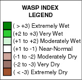

This map shows the WASP index for the globe at various monthly accumulation periods. The WASP index gives a standardized measure of precipitation excess or deficits over the selected accumulation period.
WASP is an acronym for the "Weighted Anomaly Standardized Precipitation" index and is based solely on monthly precipitation data. It gives an estimate of the relative deficit or surplus of precipitation for different time intervals ranging from 1 to 12 months. To compute the index, monthly precipitation departures from the long-term average (here, 1981-2010) are obtained and then standardized by dividing by the standard deviation of monthly precipitation. The standardized monthly anomalies are then weighted by multiplying by the fraction of the average annual precipitation for the given month. These weighted anomalies are then summed over varying time periods, in this case, 3 months. On the map the value of the given WASP index has itself been standardized.
For the WASP index, shading starts at +/- 1.0, with green shades indicating unusually wet conditions and brown unusually dry, respectively. Regions with an annual average precipitation of less than 0.2 mm/day have been "masked" from the plot.
Here, CAMS_OPI monthly gridded precipitation estimates are used to calculate the WASP.

References
Lyon, B., and A. G. Barnston, 2005: ENSO and the spatial extent of interannual precipitation extremes in tropical land areas. Journal of Climate., 18, 5095-5109.
Lyon, B., 2004: The strength of El Niño and the spatial extent of tropical drought. Geophys. Res. Lett., 31, L21204.
WASP Indices
Data CAMS_OPI monthly precipitation on a 2.5° lat/lon grid
Data Source NOAA NCEP Climate Prediction Center, CAMS_OPI
Analysis Weighted Anomaly Standardized Precipitation using 1981-2010 climatological base period
Contact help@iri.columbia.edu with any technical questions or problems with this Map Room.